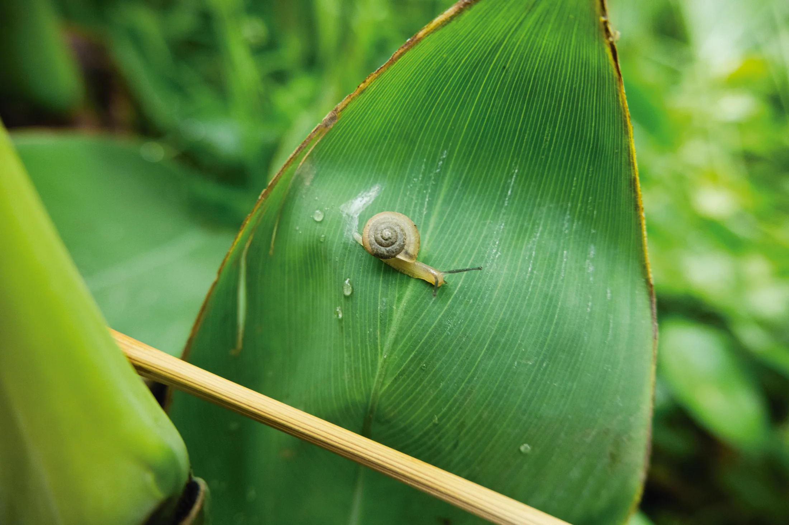
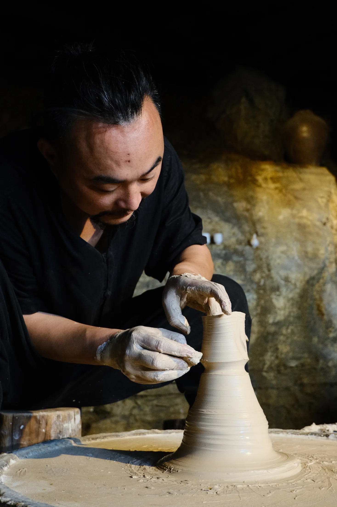

DIM LIGHT / 微明
Photography · Words · Life
Personal archive / 2025—
在微光中，从不会有绝望。
Chongqing · China
01 / Photography
Dim Light at Xiuhu

Lost Angel
Before the Android
Westward to Ganzi
Notes from Beijing
Small Town Studies

02 / Journal
Fiction / Longform
Essay / Memory
03 / About
Elsewhere / 即将开放